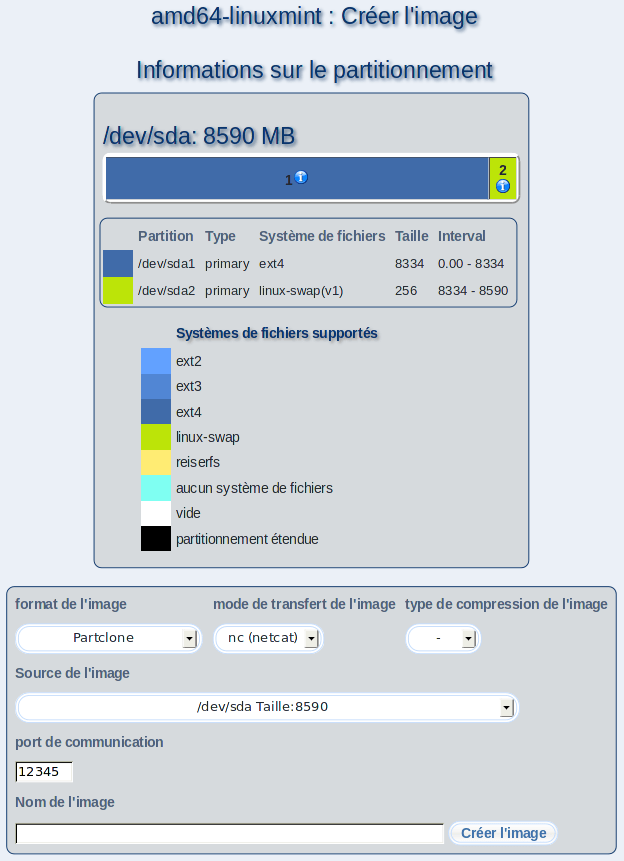

Par ce dialogue, vous pouvez créer des fichiers image de partitions ou de disques durs entiers d'un poste client; ultérieurement, vous pourrez utiliser ces images pour l'installation d'autres postes client.
Pour cela, choisissez le format de l'image souhaité, le mode de transfert de l'image et la type de compression de l'image.
Dépendant du format de l'image, il est nécessaire que vous saisissiez des informations additionelles dans le champ «Source de l'image», par exemple quelle partition ou quel disque a été enregistré dans le fichier image.
Choisissez ensuite un nom pour votre fichier et saisissez le dans le champ «Nom de l'image».
Enfin, cliquez sur «Créer l'image».
Sous-sections
dodger
2012-12-10